5 Model
Train model
Check out the user manual for more details about this module’s features.
Use the Model >> model module to create a machine learning-based predictive model. Models are useful for identifying how well the data can classify groups(classification) or predict continuous variables (regression). Model variable importance and coefficient weights are useful for determining the contribution of each variable to the model performance.
Methods
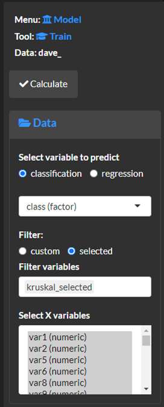
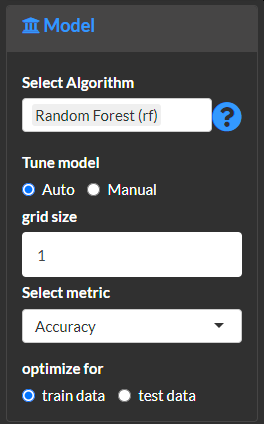
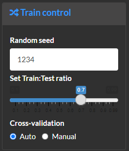
Select calculate and view the analysis methods and results.
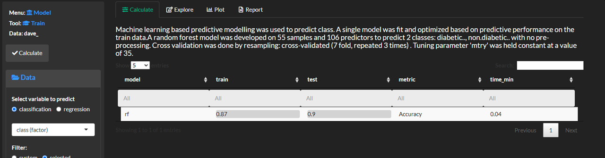
Explore and plot
The performance plot to compare model performance and training time.
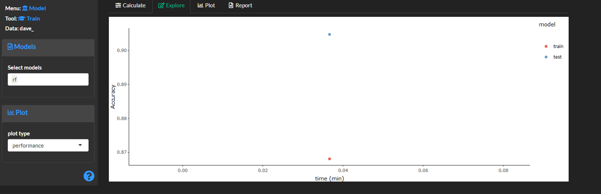
The model plot to shows the cross-validated model scores for a variety of metrics.
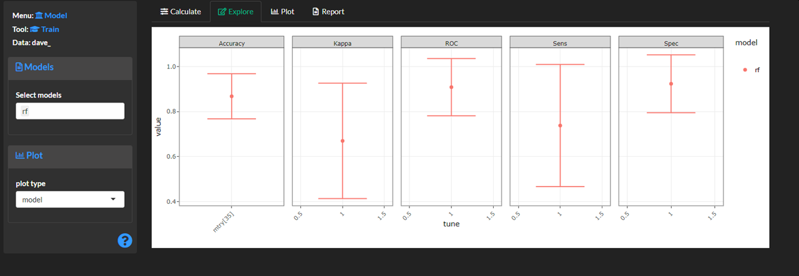
The importance plot ranks all features based on their contribution to the model’s performance.
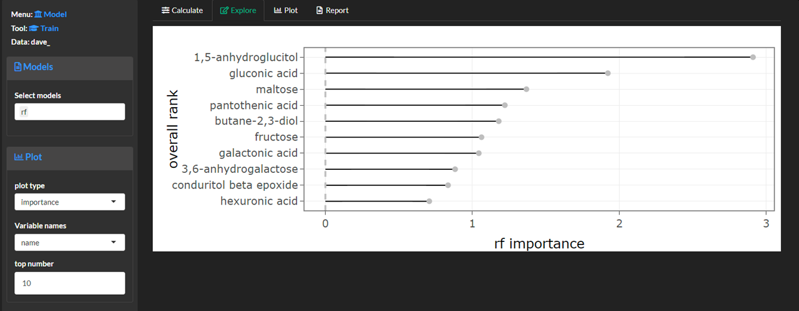
The confusion (matrix) plot shows predicted vs. actual sample classifications. Use show show metric to plot counts or percent or correctly and incorrectly classified samples.
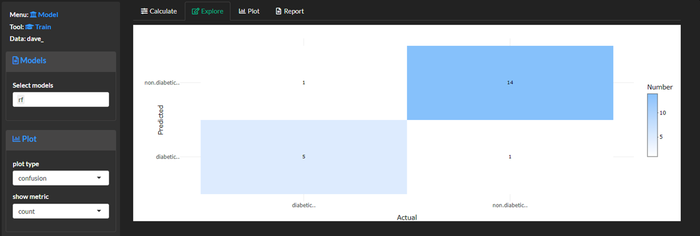
The classification plot is used to create a precision vs. recall or area under the receiver and operator curve (ROC).
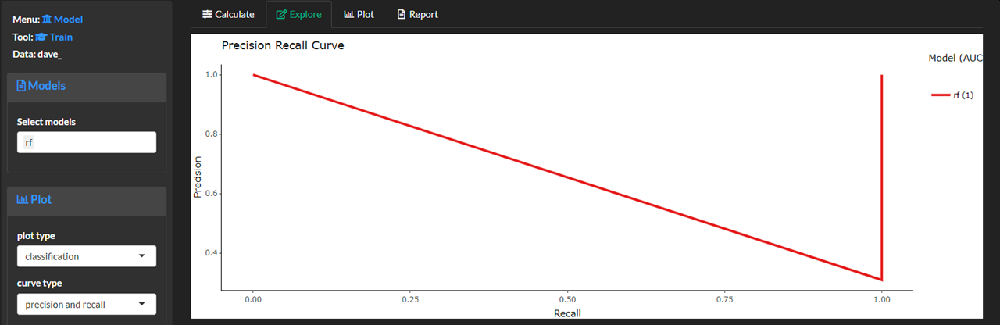
Report
Create a report to save all methods and results.
Save
Save the results for later analyses. Use cache models to save specific model results. Unselect the cache models option if you want to create predictive models for different objectives for the same data set.
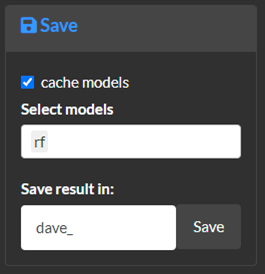
Feature selection
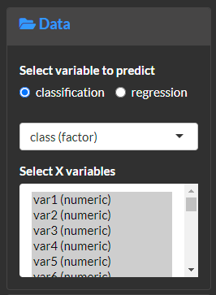
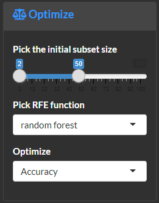
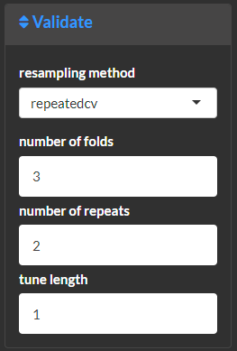
Select calculate and view the analysis methods and results.
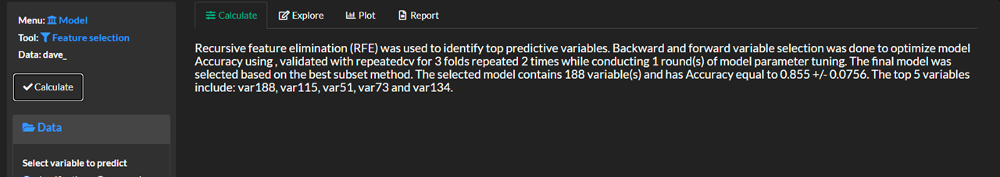
Explore and plot
The overall plot shows the model performance metric selected in optimize for each subset of iteratively selected variables. Use best subset function to define the set of variables with the best model performance.
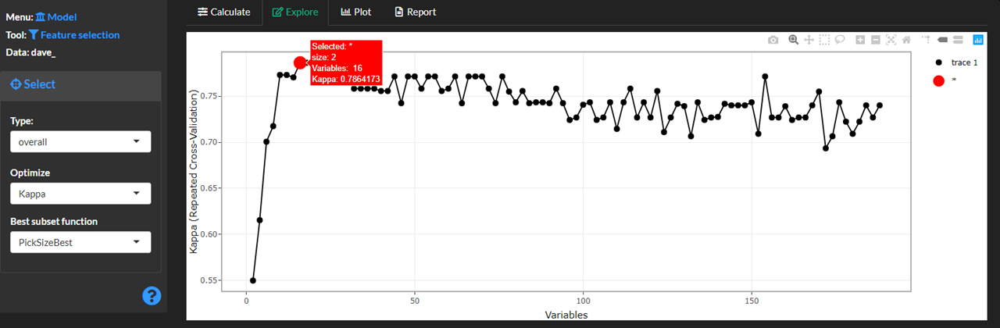
The importance plot to shows the feature importance of all variables and highlights the optimal subset.
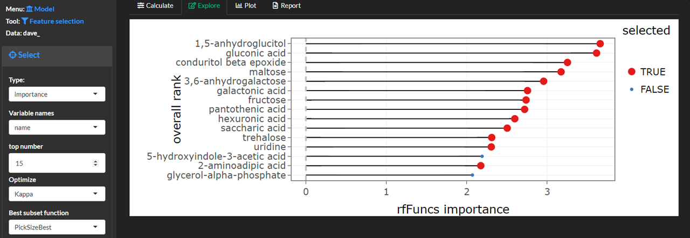